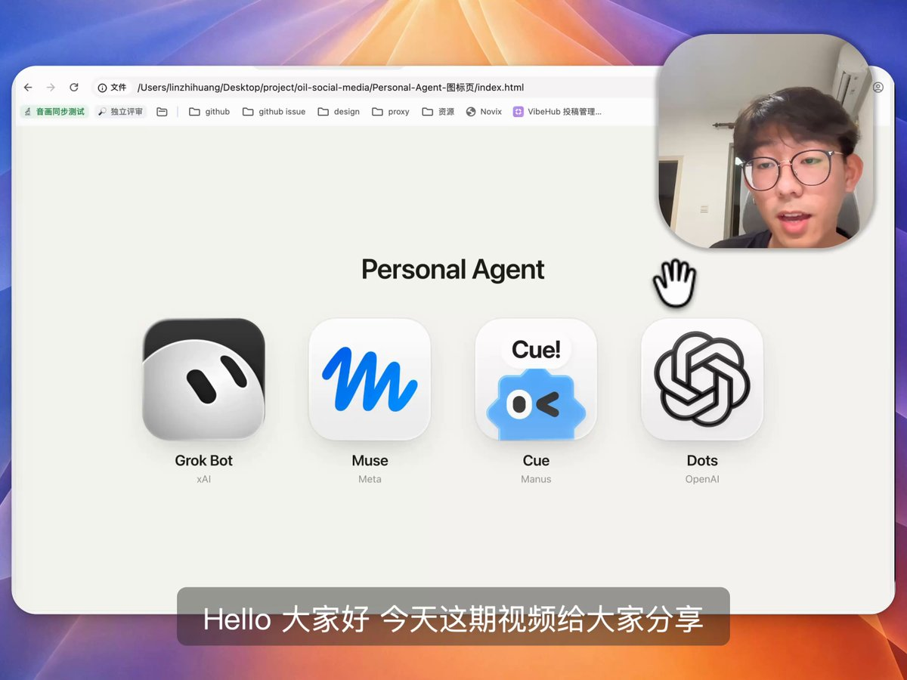

X｜Personal AI Agent 熱潮：雲端電腦、資料連接與商業模型的現實檢核

一句話摘要
這波 Personal AI Agent 的共同方向，不是多一個聊天視窗，而是讓 Agent 有一個可持續工作的雲端環境，再透過手機或桌面接收委派。真正決定它能否走入日常的，是可授權的資料、可靠的模型與成本、平台是否願意開放，以及人類能否隨時看見、暫停與核准外部行動。
原貼文與影片重點
X 作者 oil-oil 在約 12 分 25 秒的影片中，將 Grok Bot、Meta Muse、Manus Cue 和「Dots」放在同一張 Personal Agent 對照圖。貼文的核心觀點包括：
- 產品形態可理解為：使用者用手機對話，Agent 在雲端電腦中持續處理任務。
- 與本機或較偏極客的 Agent 相比，差異主要是上手流程、產品化介面，以及可連接的身份與服務更多。
- 日常型 Agent 需要讀取郵件、協作與生活服務資料；若資料或連接器拿不到，任務上下文便不完整。
- 生活任務的容錯率往往低於一般辦公任務，模型品質、失敗處理與成本都會直接影響可用性。
- 平台未必樂見 Agent 直接繞過首頁、廣告與衝動消費；在社交環境中，也會衍生「對面是否真人」的信任問題。
- 作者的結論是：若本機 Agent 加上 Codex、Claude 等工具已能滿足工作，不必只因概念熱度而把工作搬到雲端。
這些是作者的分析與取捨，不是各平台的共同官方規格或商業承諾。
查核：四個名字不能當成同一種已證實產品
- Grok Bot：xAI 2026-08-11 的產品公告可確認，Bot 有自己的電腦、可在工具與 app 中工作、能持續執行；外部行動需要使用者介入時會回來要求批准。可用方案與地區均可能變動。
- Meta Muse：官方 muse.ai 可確認它以專屬 Secure VM／瀏覽器代表使用者完成任務，並將寄信、購物等影響外部世界的操作設計為需人類審核的情境。
- Manus Cue：Cue 官方頁展示電話、郵件、錢包、工作區與多 Agent 對話等產品方向；實際帳號資格、國家、付款與連接器範圍仍應在產品內確認。
- OpenAI Dots：本貼文將 Dots 標為 OpenAI 產品，但截至本次擷取，仍未找到可追溯的 OpenAI 官方公告或 release note 可確認此名稱、功能、方案或可用性。因此僅能記為社群說法，不能和前三者等量齊觀。
這則觀察最值得帶走的三個結構問題
- 資料與連接權
Agent 是否能讀取任務真正需要的郵件、文件、行事曆、GitHub 或其他服務，取決於 API、OAuth scope、平台規則與使用者授權。資料「可連」不等於應全部連上；更不代表能取得私人訊息、交易紀錄或其他高敏感內容。
- 模型、雲端環境與成本
長時間任務的成本不只有 token，也包含持久 VM、瀏覽器、儲存、網路、重試與人工接手。高品質模型能降低失敗率，但日常任務一旦牽涉金錢、身份或對外承諾，仍不能用「模型更強」取代核准與復原機制。
- 平台與社會信任
Agent 若直接完成搜尋、比價、下單或訊息往返，確實可能改變既有的流量、廣告與轉換機制。對使用者而言，更急迫的問題是可觀測性：它看過什麼、用了哪個帳號、準備做什麼、是否可一鍵停下，以及誰該為錯誤負責。
導入檢核表
- 先從公開研究、資料整理、草稿或提醒等可回復的低風險任務開始。
- 將讀取權、寫入權、付款權與外寄訊息權分開；不要因方便就把主帳號完整登入態交給 Agent。
- 對寄信、發文、下單、付款、刪除、正式部署與帳號設定一律保留逐次人工核准。
- 確認每個 connector 都可撤銷，並能看到任務紀錄、使用的工具與失敗原因。
- 以實際帳號可用性、地區、價格、額度和資料處理條款做決策，而非社群展示或概念名稱。
與既有 AI 學習雷達條目的關係
本篇保存的是跨產品的市場與產品形態分析；各產品的第一方能力與風險邊界，請交叉閱讀既有專文：
- Grok Bot 雲端電腦與共享登入態：https://m11808008.github.io/hermes/knowledge-base/articles/2026/09/2026-09-18-aiposthub-grok-bot-agent-fleet-cloud-computer.html
- Meta Muse 個人 Agent：https://m11808008.github.io/hermes/knowledge-base/articles/2026/09/2026-09-18-threads-ericleung-meta-muse-agent-region-invite.html
- Manus Cue 個人 Agent：https://m11808008.github.io/hermes/knowledge-base/articles/2026/10/2026-10-09-threads-sstar-lung-cue-personal-agents.html
- OpenAI Dots 社群宣稱查核：https://m11808008.github.io/hermes/knowledge-base/articles/2026/09/2026-09-30-threads-prompt-case-openai-dots-unverified.html
原始與查核連結
- X 原始分享：https://x.com/i_am_oil_oil/status/2109680797477421317?s=12&t=auVcoiE4iR2928axpMSCRg
- X canonical：https://x.com/I_am_oil_oil/status/2109680797477421317
- Grok Bot 官方公告：https://x.ai/news/introducing-grok-bot
- Meta Muse 官方網站：https://muse.ai/
- Cue 官方網站：https://cue.im
- OpenAI News：https://openai.com/news/
- 本文擷取紀錄：source-archive/2026-10-12-x-oil-personal-ai-agent-cloud-computer-reality-check.json